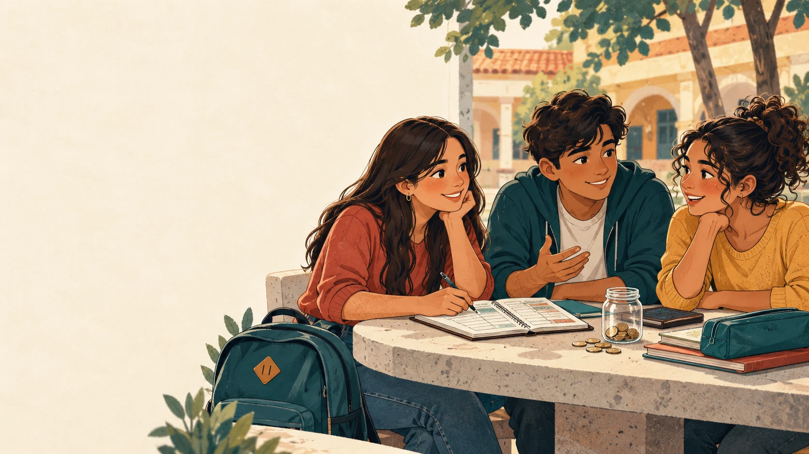

El dinero de la semana
Planificar antes de gastar.
Programa en desarrollo
Educación financiera para la vida
Tres amigos, decisiones cotidianas y mucho por aprender. Una propuesta de Horacio Zayas y Blas Ojeda Chamorro para conversar sobre el dinero, el ahorro y los primeros proyectos. Mi Paraguay articula apoyos para hacerla realidad.
Personajes e ilustración conceptual. Sus nombres y diseños finales siguen en desarrollo.

Aprender antes de decidir
En cada historia, una decisión cotidiana lleva a los protagonistas a detenerse, mirar lo que pasó y probar otra manera de elegir. Sus creadores proponen actividades para practicar, hacer preguntas y construir hábitos posibles para cada realidad.
Historias para pensar y practicar
Los episodios partirían de situaciones reconocibles entre el colegio, la familia y las primeras iniciativas de los jóvenes.
Un gasto, una oportunidad o una promesa pone a los amigos frente a una decisión.
La historia muestra qué información faltó y qué consecuencias tuvo la elección.
Los protagonistas comparan alternativas y aplican una idea sencilla.
Una actividad propone practicar con montos ficticios y conversar en casa o en clase.
Seis historias posibles
La temporada y sus recursos están en preparación. Esta vista muestra los temas previstos; todavía no hay episodios para reproducir.
Planificar antes de gastar.
Reconocer prioridades sin juzgar realidades.
Convertir el ahorro en un hábito posible.
Entender el crédito con acompañamiento adulto.
Conversar sobre ingresos y decisiones nuevas.
Reconocer ingresos y costos de una iniciativa.
Los materiales educativos del Banco Central del Paraguay se proponen como referencia técnica. Las fuentes específicas se identificarían tras la revisión de cada guion.
Historias con dos chicas y un chico de 15 años. Seis temas propuestos para iniciar el programa.
Una serie para niños con lenguaje y actividades propios, todavía por desarrollar.
Para docentes, familias y posibles aliados
Los coideólogos impulsan esta propuesta y Mi Paraguay puede reunir capacidades, instituciones y aliados para desarrollarla. La participación en centros educativos y cualquier auspicio dependerían de acuerdos posteriores.
Interés en contenidos, actividades o una futura prueba educativa.
Interés en conocer una posible forma de acompañar la producción.
Si querés conocer la propuesta o explorar una colaboración, podés usar los canales generales de Mi Paraguay. Las condiciones de cualquier participación se acordarían después.
Contactar a Mi Paraguay